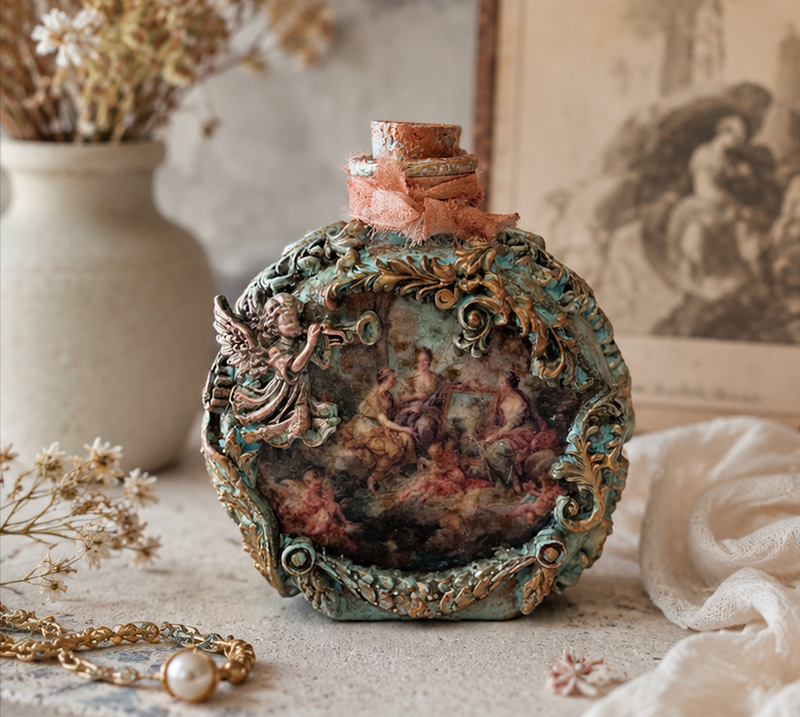

Handcrafted Artisan Glass Bottle – Rococo Reverie Collection
$36.00 USD
A romantic little treasure inspired by the elegance of the Rococo era, this handcrafted decorative glass bottle combines antique beauty, delicate pastoral imagery, and richly textured ornamental details.
The softly aged turquoise finish is accented with warm antique-gold and bronze tones, creating the feeling of a treasured object discovered in an old European cabinet. Both sides feature dreamy vintage-style pastoral scenes, framed by elaborate scrollwork, botanical motifs, and dimensional cherub details.
The intentionally weathered finish gives the bottle the character of an heirloom piece — delicate, nostalgic, and beautifully imperfect
Details:
- Original glass vessel individually hand-decorated
- Vintage-inspired decoupage artwork featuring romantic Rococo pastoral scenes
- Ornate dimensional decorative elements with antique bronze and aged-gold finish
- Intricate scrollwork and botanical embellishments surrounding the artwork
- Delicate cherub/musical angel ornament on the front
- Aged turquoise patina with warm bronze and copper accents
- Decorative cork stopper wrapped with softly frayed vintage-style coral fabric
- Artwork and ornamentation continue onto both sides of the bottle
- Each bottle is unique; minor variations in color, texture, patina, and hand-applied details are intentional and part of its artisan character
Dimensions: 4.75" H × 3.63" W × 1.44" D
Materials: Glass, decoupage artwork, decorative metal embellishments, cork, fabric
✨ LUXURY GIFT PACKAGING:
Presented in a premium gift box—beautifully packaged and ready to give as a distinctive keepsake or collectible decorative piece.
Care:
Display only. Avoid moisture, excessive handling, and direct sunlight to help preserve the artwork and decorative finish. Dust gently with a soft, dry cloth.
Perfect for:
Rococo-inspired interiors, French country decor, vintage collections, romantic dressing tables, antique-inspired shelves, European-style interiors, collectible art objects, and elegant gifts for lovers of old-world beauty.
Static placeholder page of the local homepage copy.